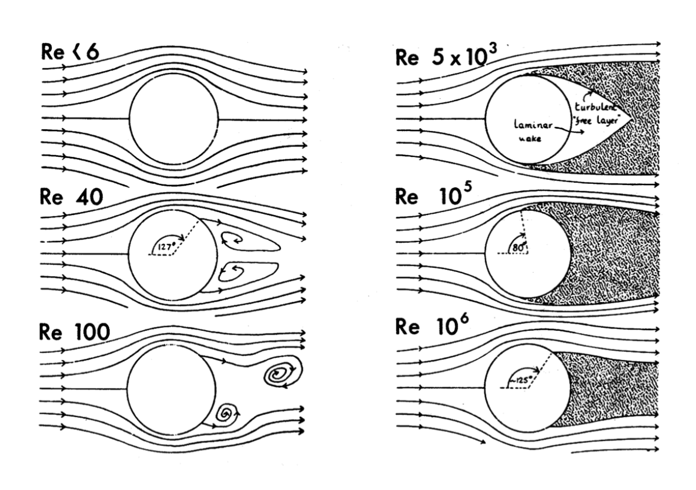

External flow fundamentals
Internal pipe flow is not enough for me, continue to review the tricky part.
4 Fluid-structure interaction
When an unbounded homogeneous flow approaches an obstacle, viscous effects become important and substantially deform the flow profile. The resulting boundary layers and wakes are responsible for generating forces and moments on the obstacle.
4.1 Examples
4.1.1 Lift generation
Here comes the most popular question: how does an aircraft fly?
The basic answer is that
The airfoil is shaped so that its upper surface is longer than its lower surface. A parcel of fluid arriving at the leading edge then splits into two parcels, one following the upper surface and the other the lower surface. As the fluid has more distance to travel on the upper surface than on the lower surface, it goes faster to have the same transit time. The Bernoulli effect follows: the higher velocity on the upper surface yields a lower pressure and an ascending force is created: the lift.
The use of Bernoulli effect is, to some extent, correct. However, based on experiment findings shown below, the same transit time assumption is not quite right.
I{t}s clear the upper flow is accelerated compared to the lower flow. This happens already at the leading edge, but the lower flow never catches up with the upper one. As a result, the upper flow possesses a shorter transit time.

As a consequence, the physical mechanism behind lift is not so simple. A plausible answer is twofolds.
- On the one hand, the fluid is accelerated on the upper surface and slowed down on the lower surface, creating a descending pressure gradient, hence lift.
- On the other hand, the fluid trajectory is overall deflected downwards when passing the airfoil. This implies that the airfoil creates a descending force onto the fluid, and, by Newton’s third law, that the fluid generates an ascending force onto the airfoil.
4.1.2 Wingtip vortices
At the tip of the wing, when the lower pressure upper surface meets the higher pressure lower surface, wingtip vortices are generated. These vortices are generally strong, long-lived and consequently dangerous, as shown below:

Flying through such a vortex will create a rolling moment that can destabilize the flight. Many such incidents have happened during takeoff and landing. As a result, airports have decided on quiet periods of one to two minutes between two successive takeoffs or landings to allow for these vortices to dissipate to a less dangerous strength.

Yet the wingtip vortices are leveraged perfectly by the nature, the V-formation. When one bird follows another bird, it places itself a little bit on the side to benefit from the lift generated by the wingtip vortices of its leader.
4.1.3 Others
Wind and ocean engineering also present important challenges in the area of fluid-structure interaction.
The construction of tall building is necessary to accommodate large professional centres and these tall buildings interact strongly with the wind. Similar issues arise with bridges. Serious oscillation would be generated due to the "wind load".
In water, it is important to understand fluid-structure interactions to design efficient breakwaters and protect constructions on the shore or beaches. Pier piles are also good examples of structures interacting with water and that have to be designed carefully.
Lastly, we can take advantage of natural phenomena such as wind and currents by designing structures that will store such energy like wind and water turbines.
4.2 Effect of a structure on the fluid
When an external flow goes past an obstacle, boundary layer and wake effects occur on the walls and after the obstacle respectively.
4.2.1 Boundary layers

Convenient definition: a region where the fluid’s velocity parallel to the wall is smaller or equal to 99% of the external velocity.
- Inside the boundary layer, the flow feels the effect of the wall and is gradually slowed down as we approach the wall. The presence of these velocity gradients is a consequence of viscous dissipation.
- Outside the boundary layer, the flow does not feel the presence of the walls. It remains homogeneous and is considered inviscid.
Note that this is only an assumption, the interaction between the boundary layer and the outer pressure distribution is neglected. For slender bodies at large \(Re\), such as airfoils, when placed parallel to the flow, this assumption provides good results due to the thin and weak boundary layer.
There are two types of the boundary layers defined by the Reynolds number:
- Low \(Re\), laminar boundary layer. Because spatial variations are slow, the laminar boundary layer occupies a large spatial region.
- High \(Re\), two distinct regions in the boundary layer:
- laminar boundary layer similar to that of low-Re flows but much thinner
- turbulent boundary layer that occurs further away in the streamwise direction and is larger than the laminar boundary layer.
The viscous displacement effect describes the non-zero velocity in the direction orthogonal to the wall because the velocity parallel to the wall varies in the direction orthogonal to the wall.
- For low \(Re\) laminar boundary layers, this effect is important
- For high \(Re\) boundary layers, these boundary layers are so thin that this effect is negligible.
4.2.2 Wakes

When the inertia is non-trivial (equivalently viscous effects are not overwhelmingly dominant), the gradients of velocity induced by the boundary layer are advected downstream and create a wake past the obstacle. This region can display dramatic departures from the established flow infinitely far away from the obstacle.
The sketch above shows how several typical regimes of the wake past a cylinder in different \(Re\)s:
- Low \(Re\): steady and symmetric flow
- \(Re=\mathcal{O}(10)\):
- the upstream-downstream symmetry is broken
- flow separation occurs. The boundary layers separate from the wall and a recirculation zone is created where two counter-rotating vortices live.
- wake remains stationary
- the up-down symmetry is still preserved
- \(Re=\mathcal{O}(100)\):
- the up-down symmetry is broken
- flow separation developed
- wake is now periodic in time, vortices periodically break away from the back of the cylinder in an alternate fashion and are advected downstream
- This type of wake is called Von Kármán streets.
- \(Re>\mathcal{O}(1000)\): any simple time-dependence in the wake is lost and it is now turbulent.
Note that as the Reynolds number is increased, different types of turbulent wakes can be observed.
- At \(Re = 5\times10^3\), the turbulent wake is detached from the wall and a laminar bubble is observed at the back of the cylinder.
- As the Reynolds number is increased, this bubble shrinks
- At \(Re = 10^5\), the back of the cylinder has become fully turbulent
- As Re is further increased, the turbulent wake becomes thinner and thinner and the influence of the cylinder on the flow decreases. This is the result of the fact that the characteristic length for advection becomes incomparably larger than the diameter of the cylinder
4.3 Effect of the fluid on a structure
In this section, we look at the opposite interaction: the impact of boundary layers and wakes on the structures.
4.3.1 Free kick like Cristiano Ronaldo
Personally, I'm not a big fan of football. The only football game I watch is FIFA. And I happened to watch this legendary game on live. I remember it was 3 o'clock in the morning and I barely held my scream.

The explanation of such a trajectory lies in the Magnus effect which describes a spinning object moving through a fluid. Rotating the ball accelerates the flow on one side while slowing it down on the other. This difference of velocity breaks the symmetry of the flow and creates a difference of pressure. And this results in an additional force that bends the trajectory of the ball.
4.3.2 The Tacoma Narrows bridge
Another famous aeroelastic failure is this 1.8km long bridge in the state of Washington. The 6 million dollar bridge collapsed in a steady standard wind in November, 1940, only 3 months after its opening date. Back then this wind interacted in an unexpected manner with the bridge and created a positive feedback loop called aeroelastic flutter. A oscillating wake due to the periodic vortex shedding excited a second torsional mode: the midpoint of the bridge remained motionless while the two opposite halves twisted in opposite directions. This torsion further enhanced the strength of the wake, which in turn enhanced the torsion until the bridge collapsed.
5 Boundary layer theory – Integral approach
First, a control volume is defined as blow:
- Boundary ①: the segment \((0, 0)\) to \((0, h)\), where \(\mathbf{u} = U\mathbf{\hat{x}}\).
- Boundary ②: the streamline \((0, h)\) to \((L, \delta)\), where \(\mathbf{u}\cdot \mathbf{n} = 0\).
- Boundary ③: the segment \((L, \delta)\) to \((L, 0)\), where $ = u(x, y) + v(x, y)$.
- Boundary ④: the plate surface and streamline \((L, 0)\) to \((0, 0)\), where \(u = 0\).

5.1 Viscous displacement
5.1.1 Physical origin
The viscous displacement determines the upstream streamlines parallel to the wall to move away from the wall i.e. boundary ② to tilt upward. It can be explained by the 2D compressible continuity equation: \[ \partial_x u+\partial_y v=0 \] Near the boundary ③, the no-slip condition gives \(\partial_xu<0\), to compensate for it, \(\partial_yv>0\), and the consequence of this is the viscous displacement.
5.1.2 Displacement thickness

The quantity \(\delta^*\) is called displacement thickness and represents the distance by which the wall would have to be moved in the wall normal direction to obtain the same flow rate in an inviscid flow. i.e. the additional blockage/deflection due to viscosity.
By definition, it is easy to conclude that \(\delta = \delta^*+h\). And by mass conservation between the inlet and the outlet, the displacement thickness can be described: \[ \begin{aligned} \rho\int_1(\mathbf{u}\cdot\mathbf{n})ds&+\rho\int_3(\mathbf{u}\cdot\mathbf{n})ds =0 \\ \int^{\delta-\delta^*}_0(-U&)dy+\int^\delta_0udy=0 \\ Uh&= \int^\delta_0udy \\ \end{aligned} \] Substitute \(h\) with \(\delta-\delta^*\) : \[ \begin{aligned} U(\delta-\delta^*) &= \int^\delta_0udy \\ U(\delta-\delta^*) &= \int^\delta_0\left(u+U-U\right)dy \\ U(\delta-\delta^*) &= U\delta+\int^\delta_0\left(u-U\right)dy \\ \Rightarrow \quad\delta^* = \int_0^\delta&\left(1-\frac uU\right)dy\\ \Rightarrow \quad\color{purple}{\frac{\delta^*}{\delta} = \int_0^1}&\color{purple}{\left(1-\frac uU\right)d\eta}, \quad\mathrm{where~}\eta=\frac{y}{\delta}\\ \end{aligned} \]
5.2 Friction drag
5.2.1 Drag as a boundary layer effect
Assume a constant pressure throughout the domain, and a steady flow. The conservation of momentum in \(\mathbf{\hat{x}}\) writes: \[ \begin{aligned} \rho\int_1u(0,y)(\mathbf{u}\cdot\mathbf{n})ds + \underbrace{\rho\int_2u(x,y)(\mathbf{u}\cdot\mathbf{n})ds+}_{\mathrm{streamline:~}\mathbf{u}\cdot\mathbf{n}=0} ...\\ \rho\int_3u(L,y)(\mathbf{u}\cdot\mathbf{n})ds+ \underbrace{\rho\int_4u(x,0)(\mathbf{u}\cdot\mathbf{n})ds}_{\mathrm{wall:~}u=0}= \Sigma F_x = -D\mathbf{\hat{x}} \end{aligned} \] The equation simplifies into: \[ \begin{aligned} \rho\int_0^hU(-U)dy + \rho\int_0^\delta u^2dy=-D \\ \Rightarrow\qquad D = \rho hU^2 -\rho\int_0^\delta u^2dy \end{aligned} \] Combine with the mass conservation result \(Uh= \int^\delta_0udy\): \[ \begin{aligned} D &= \rho \int_0^\delta Uudy-\rho\int_0^\delta u^2dy \\ \color{purple}{D }&\color{purple}{= \rho \int_0^\delta \frac{u}{U}\left(1-\frac{u}{U}\right) dy} \end{aligned} \]
5.2.2 Momentum thickness
The quantity \(\theta\) is called momentum thickness and represents the distance by which the wall would have to be moved in the wall normal direction to obtain the same momentum in an inviscid flow. \[ \color{purple}\frac{\theta}{\delta} = \frac{D}{\rho U^2\delta} = \int_0^1 \frac{u}{U}\left(1-\frac{u}{U}\right) d\eta, \quad \mathrm{where~}\eta = \frac{y}{\delta} \] i.e. the momentum deficit can be determined by: \[ \rho U^2\theta = \rho \int_0^\delta \frac{u}{U}\left(1-\frac{u}{U}\right)dy \]
There is another Energy thickness writes: \[\color{purple}\frac{\theta'}{\delta} = \int_0^1 \frac{u}{U}\left(1-\frac{u^2}{U^2}\right) d\eta, \quad \mathrm{where~}\eta = \frac{y}{\delta}\]
We can then define the shape factor: \[ H = \frac{\delta^*}{\theta} \]
Shape factor indicates the wall-normal distance on which the fluid is deflected from the plate compared to that on which gradients of streamwise velocities are felt.A large shape factor indicates a flow near separation.
5.2.3 Relation to wall shear stress
The drag force is the integration of wall shear stress \(\tau_w\) along the plate: \[ D = \int_0^L\tau_wdx \] Or in differential form: \[ \tau_w = \partial_xD \] Differentiate the momentum thickness representation: \[ \partial_x\theta = \frac{\partial_xD}{\rho U^2}=\frac{\tau_w}{\rho U^2} \] As a result, the wall shear: \[ \color{purple}\tau_w = \rho U^2\partial_x\theta \]
5.3 Velocity profile approximations
For laminar boundary layers, Von Kármán assumed that the velocity profile (\(\frac{u}{U}\)) within the boundary layer had a parabolic shape:
Given: \[ \eta = \frac{y}{\delta(x)} \] The velocity profile (\(\frac{u}{U}\)) writes: \[ \frac{u}{U}\approx 2\eta -\eta^2, \qquad 0\leq \eta\leq 1 \] For turbulent boundary layers, Prandtl highlighted a one-seventh power velocity profile: \[ \frac{u}{U}\approx\eta^\frac{1}{7}, \qquad 0\leq \eta\leq 1 \] These first order approximations are very close to the reality as shown below:

5.4 Laminar results (Von Kármán results)
Based on Von Kármán's approximation, \(\frac{u}{U}\approx \frac{2y}{\delta} -\left(\frac{y}{\delta}\right)^2\). It is easy to get:
Boundary thickness:
The key point is that the wall shear stress can be expressed in two ways,
by definition: \[ \begin{aligned} \tau_w &= \mu \partial_yu|_{y=0} \\ \Rightarrow \quad \tau_{w} &\approx \mu \partial_{y}\left.\left(\frac{2 y}{\delta}-\frac{y^{2}}{\delta^{2}}\right)\right|_{y=0} \\ \Rightarrow \quad \tau_{w} &\approx \mu \frac{2 U}{\delta}\\ \end{aligned} \]
and by the derivative of drag: \[ \begin{aligned} \tau_w &= \rho U^2\partial_x\theta \\ \Rightarrow \quad \tau_{w} &\approx \rho U^2\partial_x\left[\int_{0}^{\delta}\left(\frac{2 y}{\delta}-\frac{y^{2}}{\delta^{2}}\right)\left(1-\frac{2 y}{\delta}+\frac{y^{2}}{\delta^{2}}\right) d y \right] \\ \Rightarrow \quad \tau_{w} &\approx \frac{2\rho U^2}{15}\partial_x\delta \end{aligned} \]
As a result, connect these expressions: \[ \begin{aligned} &\mu \frac{2 U}{\delta} \approx \frac{2\rho U^2}{15}\partial_x\delta \\ \Rightarrow \quad &\int_0^x dx \approx \int_0^\delta \frac{\rho U}{15}\delta d\delta \\ \Rightarrow \quad &x \approx \frac{\rho U \delta^2}{30\mu} \\ \Rightarrow \quad & \left(\frac{\delta}{x}\right)^2 \approx \frac{30\mu}{\rho U x} \\ \Rightarrow \quad & \color{purple}{\frac{\delta}{x} \approx 5.5 Re_x^{-1/2}} \\ \end{aligned} \] where \(\color{purple}Re_x= Ux/\nu\) as the streamwise Reynold.
the displacement thickness: \[ \begin{aligned} \delta^* &= \int_0^\delta\left(1-\frac{u}{U}\right)dy \\ &\approx \int_0^\delta\left(1-\frac{2y}{\delta}+\left(\frac{y}{\delta}\right)^2\right)dy \\ \Rightarrow \quad \delta^*&\approx \frac{1}{3}\delta\\ \end{aligned} \] with the boundary thickness expression: \[ \begin{aligned} \color{purple}\frac{\delta^*}{x}\approx 1.83 Re_x^{-1/2} \end{aligned} \]
the momentum displacement and the factor of friction: \[ \begin{aligned} \theta &= \int_{0}^{\delta}\left(\frac{2 y}{\delta}-\frac{y^{2}}{\delta^{2}}\right)\left(1-\frac{2 y}{\delta}+\frac{y^{2}}{\delta^{2}}\right) d y \\ \Rightarrow \quad & \theta \approx \frac{2}{15}\delta \\ \Rightarrow \quad & \color{purple}{\frac{\theta}{x} \approx 0.73 Re_x^{-1/2}} \end{aligned} \] The factor of friction has the same order with the momentum displacement, as \[ \color{purple}{C_f \approx 0.73 Re_x^{-1/2}} \]
the shape factor: \[ \color{purple} H = \frac{\delta^*}{\theta} \approx 2.5 \]
5.5 Laminar results (Blasius results)
Reference to MIT's note, MECH 346 – Heat Transfer's Youtube channel
5.5.1 Governing equations
Conditions:
2D
Steady
Incompressible
Neglect viscous dissipation, gravity and thermal dissipation
Plus the thin layer assumption (\(L\gg\delta\)) for boundary layer (Obtained by non-dimensional scaling analysis, Full deriving on Appendix A.1): \[ \begin{aligned} u&\gg v \\ \frac{\partial}{\partial y}&\gg\frac{\partial}{\partial x} \end{aligned} \]
The mass and momentum conservation equations reduces to: \[ \begin{aligned} \frac{\partial u}{\partial x}+\frac{\partial v}{\partial y} &= 0 \\ u\frac{\partial u}{\partial x}+v\frac{\partial u}{\partial y}&=-\frac{1}{\rho}\frac{\partial p}{\partial x}+ \nu\left(\overbrace{\frac{\partial^2u}{\partial x^2}}^{\mathrm{0}}+\frac{\partial^2u}{\partial y^2}\right) \\ u\frac{\partial v}{\partial x}+v\frac{\partial v}{\partial y}&= \underbrace{-\frac{1}{\rho}\frac{\partial p}{\partial y}}_{\text{principle order}}+\nu\left(\frac{\partial^2v}{\partial x^2}+\frac{\partial^2v}{\partial y^2}\right) \end{aligned} \] as a result: \[ \begin{aligned} \frac{\partial u}{\partial x}+\frac{\partial v}{\partial y} &= 0 \\ u\frac{\partial u}{\partial x}+v\frac{\partial u}{\partial y}&=-\frac{1}{\rho}\frac{\partial p}{\partial x}+\nu\frac{\partial^2u}{\partial y^2} \\ \frac{1}{\rho}\frac{\partial p}{\partial y}&=0 \end{aligned} \]
For the flat plate boundary layer, it is easy to get \(\frac{\partial p}{\partial x}=0\) because the free stream pressure gradient in the \(x\) direction is \(0\), so as in the boundary layer given the \(\frac{\partial p}{\partial y}=0\). As a consequence there is no pressure gradient within the flat plate boundary layer. The final governing equation writes:
\[ \color{purple} \begin{aligned} \frac{\partial u}{\partial x}+\frac{\partial v}{\partial y} &= 0 \\ u\frac{\partial u}{\partial x}+v\frac{\partial u}{\partial y}&=\nu\frac{\partial^2u}{\partial y^2} \\ \end{aligned} \]
And the boundary conditions are:
\[ \color{purple} \begin{aligned} u=v = 0\quad&\mathrm{at}\quad y = 0\\ u = U\quad&\mathrm{at}\quad x = 0 \\ u \rightarrow U\quad&\mathrm{as}\quad y \rightarrow \infty \\ \end{aligned} \]
These conditions demand an infinite gradient in speed at the leading edge \(x = y = 0\), which implies a singularity in the mathematical solution there. The solution given by the boundary layer approximation is not valid at the leading edge.
Define a stream function so that the continuity equation will be automatically included: \[ \begin{aligned} \psi &= \int u dy \\ u = \frac{\partial\psi}{\partial y}&, \quad v = -\frac{\partial \psi}{\partial x} \end{aligned} \] Subscribe into the momentum equation to get an single variable equation: \[ \color{purple} \frac{\partial\psi}{\partial y} \frac{\partial^2\psi}{\partial x \partial y}- \frac{\partial\psi}{\partial x} \frac{\partial^2\psi}{\partial y^2} = \nu\frac{\partial^3\psi}{\partial y^3} \] with boundary conditions: \[ \color{purple} \begin{aligned} \frac{\partial\psi}{\partial y}=\frac{\partial\psi}{\partial x} = 0\quad&\mathrm{at}\quad y = 0\\ \frac{\partial\psi}{\partial y} = U\quad&\mathrm{at}\quad x = 0 \\ \frac{\partial\psi}{\partial y} \rightarrow U\quad&\mathrm{as}\quad y \rightarrow \infty \\ \end{aligned} \] Through a coordinate transformation(similarity solution), this PDE can be transferred into an ODE and thus be solved easily.
5.5.2 Similarity solution
In the study of partial differential equations, particularly in fluid dynamics, a self-similar solution is a form of solution which is similar to itself if the independent and dependent variables are appropriately scaled.
In contrast to the most frequently used method of "separation variables", the similarity solution involves combining the variables in a special way. Another example of using similarity to solve Heat diffusion equation lies on the Appendix A.2.
A self-similar equation doesn't change regardless how the variables scale. So assume a transformation: \[ \begin{aligned} y = \lambda^a\bar{y}\\ x = \lambda^b\bar{x}\\ \psi = \lambda^c\bar{\psi}\\ \end{aligned} \] The resulting scaled function and writes: \[ \begin{aligned} \lambda^{3c-2a-b}\frac{\partial\bar{\psi}}{\partial \bar{y}} \frac{\partial^2\bar{\psi}}{\partial \bar{x} \partial \bar{y}}- \lambda^{3c-2a-b}\frac{\partial\bar{\psi}}{\partial \bar{x}} \frac{\partial^2\bar{\psi}}{\partial \bar{y}^2} = \lambda^{3c-3a}\nu\frac{\partial^3\bar{\psi}}{\partial \bar{y}^3} \\ \Leftrightarrow\quad\frac{\partial\bar{\psi}}{\partial \bar{y}} \frac{\partial^2\bar{\psi}}{\partial \bar{x} \partial \bar{y}}- \frac{\partial\bar{\psi}}{\partial \bar{x}} \frac{\partial^2\bar{\psi}}{\partial \bar{y}^2} = \lambda^{-3c-a+b}\nu\frac{\partial^3\bar{\psi}}{\partial \bar{y}^3} \end{aligned} \] And the scaled boundary conditions gives: \[ \begin{aligned} \lambda^{c-a}\frac{\partial\bar{\psi}}{\partial \bar{y}}=\lambda^{c-b}\frac{\partial\bar{\psi}}{\partial \bar{x}} = 0\quad&\mathrm{at}\quad \lambda^{a}\bar{y} = 0\\ \end{aligned} \] As a result, all the powers should be 0: \[ \left.\begin{array}{c} \left.\begin{array}{c} -c-a+b=0 \\ c-a=0 \end{array}\right\} \quad b=a / 2 \\ c-b=0 \qquad \qquad \quad \end{array}\quad\right\} \quad c=a / 2 \] Here I need to put my derivation here:
Similar to Appendix A.2, we can construct an expression of \(\psi\) as: \[ \psi(x,y)= x^{1/2}f^\dagger(\eta^\dagger), \quad \eta^\dagger = yx^{-1/2} \]
Personal comment: I still don't know how to construct this kinda thing or why it work. The formula in Appendix gives me some idea but following it I got \(\psi(x,y)= x^{1}f^\dagger(\eta^\dagger)\), \(\eta^\dagger = yx^{-1/2}\) instead...
Substitute the expression of \(\psi\) into the equation with \(f^{\dagger'} = \partial_{\eta^{\dagger}}f^{\dagger}\): \[ \begin{aligned} \frac{\partial\psi}{\partial y} &= f^{\dagger'} \\ \frac{\partial^2\psi}{\partial y^2} &= x^{-1/2}f^{\dagger''} \\ \frac{\partial^3\psi}{\partial y^3}&= x^{-1}f^{\dagger'''}\\ \frac{\partial\psi}{\partial x} &= \frac{1}{2}x^{-1/2}f^{\dagger}-\frac{1}{2}x^{-1}f^{\dagger'}y \\ &= \frac{1}{2}x^{-1/2}(f^{\dagger} -\eta^{\dagger} f^{\dagger'}) \\ \frac{\partial^2\psi}{\partial x \partial y} &= \frac{1}{2}x^{-1/2}(x^{-1/2}f^{\dagger'} -x^{-1/2}\eta^{\dagger} f^{\dagger''} - x^{-1/2}f^{\dagger'}) \\ &=-\frac{1}{2}x^{-1}\eta^{\dagger} f^{\dagger''}\\ \frac{\partial\psi}{\partial y}\frac{\partial^2\psi}{\partial x \partial y} &= f^{\dagger'}\left[-\frac{1}{2}x^{-1}\eta^{\dagger} f^{\dagger''}\right] \\ &= -\frac{1}{2}x^{-1} \eta^{\dagger}f^{\dagger'}f^{\dagger''} \\ -\frac{\partial\psi}{\partial x}\frac{\partial^2\psi}{\partial y^2} &=\frac{1}{2}x^{-1/2}(f^{\dagger} -\eta^{\dagger} f^{\dagger'})\left[x^{-1/2}f^{\dagger''}\right] \\ &= \frac{1}{2}x^{-1}(f^{\dagger} +\eta^{\dagger} f^{\dagger'})f^{\dagger''}\\ \end{aligned} \] As a result: \[ \begin{aligned} -\frac{1}{2}x^{-1}\eta^{\dagger} f^{\dagger'}f^{\dagger''}+ \frac{1}{2}x^{-1}(f^{\dagger} &+\eta^{\dagger} f^{\dagger'})f^{\dagger''} = \nu x^{-1}f^{\dagger'''}\\ \Leftrightarrow \qquad \nu f^{\dagger'''} - &\frac{1}{2} f^{\dagger}f^{\dagger''} = 0 \end{aligned} \]
Ok.. above is what I derived, it's still an ODE but normally we want a cleaner result.
So Blasius construct \(\psi\) and \(\eta\) with physical meaningful non-dimensional parameters to get (reference to MECH 346 – Heat Transfer's Youtube channel): \[ \color{purple} \psi(x,y)= (\nu Ux)^{1/2}f(\eta), \quad \eta = \left(\frac{U}{\nu x}\right)^{1/2}y \] So that: \[ \begin{aligned} \eta = \sqrt{\frac{U}{\nu x}}y,& \quad\mathrm{dimensionless~wall~normal~coordinate}\\ f = \frac{\psi}{\sqrt{\nu Ux}},& \quad\mathrm{dimensionless~stream~function}\\ f' = \frac{u}{U},& \quad\mathrm{dimensionless~velocity~profile} \\ f'' = \frac{\sqrt{\nu Ux}}{U^2}\partial_yu, &\quad\mathrm{related~to~shear~stress} \\ \end{aligned} \] And terms of the governing equation becomes: \[ \begin{aligned} \frac{\partial\psi}{\partial y} &= Uf' \\ \frac{\partial^2\psi}{\partial y^2} &= {(U\nu x)}^{-1/2}f'' \\ \frac{\partial^3\psi}{\partial y^3}&= U^2x^{-1}f'''\\ \frac{\partial\psi}{\partial x} &= \frac{1}{2}(\nu U/x)^{1/2}(f -\eta f')\\ \frac{\partial^2\psi}{\partial x \partial y} &=-\frac{1}{2}Ux^{-1}\eta f'' \\ \frac{\partial\psi}{\partial y}\frac{\partial^2\psi}{\partial x \partial y} &= -\frac{1}{2}U^2x^{-1}\eta f'f''\\ -\frac{\partial\psi}{\partial x}\frac{\partial^2\psi}{\partial y^2} &= \frac{1}{2}U^2x^{-1}(f +\eta f')f''\\ \end{aligned} \] And the ODE turns out to be: \[ \color{purple} 2f''' +ff'' = 0 \] Resulting boundary condition is: \[ \color{purple} \begin{aligned} f' = 0\quad &at\quad \eta=0 \quad\mathrm{(no~slip)}\\ f = 0\quad &at\quad \eta=0 \quad\mathrm{(impenetrability)} \\ f' = 1\quad &at\quad \eta\rightarrow\infty \quad(u = U\mathrm{~free stream}) \\ f'' = 0\quad &at\quad \eta\rightarrow\infty \quad(\partial_yu=0,\mathrm{unnecessary}) \\ \end{aligned} \]
5.5.3 Solving the similarity solution
Split the 3-order ODE into a set of 3 first order ODEs: \[ \left\{\begin{array}{l} f_p = f' \\ f_{pp} = f_p' \\ 2f'_{pp} +ff_{pp} = 0 \end{array}\right. \] with boundary conditions: \[ \begin{aligned} f_p = 0\quad &at\quad \eta=0 \\ f = 0\quad &at\quad \eta=0 \\ f_p = 1\quad &at\quad \eta\rightarrow\infty \\ f_{pp} = 0\quad &at\quad \eta\rightarrow\infty,\mathrm{unnecessary} \\ \end{aligned} \] The third boundary condition has no closed form solution, so we need to solve it numerically.
One method of doing it is guessing another initial condition \(f_{pp} = ?\) at \(\eta=0\), integrating the equation from \(\eta=0\) with Runge-Kutta method to meet the 3rd boundary condition i.e. transfer the boundary condition to the initial condition.
Runge–Kutta method is an effective and widely used numerical method for solving the initial-value problems of differential equations. It integrated the function discretely from zero in small steps (\(h\)) in an order of 4 (more on LearnChemE's Youtube). \[\left\{\begin{array}{l}y_{n+1}=y_{n}+\frac{1}{6}\left(K_{1}+2 K_{2}+2 K_{3}+K_{4}\right) \\K_{1}=h f\left(x_{n}, y_{n}\right) \\K_{2}=h f\left(x_{n}+\frac{1}{2} h, y_{n}+\frac{1}{2} K_{1}\right) \\K_{3}=h f\left(x_{n}+\frac{1}{2} h, y_{n}+\frac{1}{2} K_{2}\right) \\K_{4}=h f\left(x_{n}+h, y_{n}+K_{3}\right)\end{array}\right.\]
It turns out it meets the 3rd boundary condition when: \[ f_{pp} = 0.332~at~ \eta=0 \] And the function looks like below:

From the solution, we can see the stream function \(f\) first increases with a decreasing slop then approaches to a linear increase line. While the velocity profile \(f'\) and shear stress \(f''\) approach the 1 and 0 at the free stream respectively,
Another method is solve \(f_{pp}~at~ \eta=0\) directly numerically. And the solution is: \[ f_{pp} = 0.332096~at~ \eta=0 \] More on MECH 346 – Heat Transfer's Youtube channel and MIT's note.
5.5.4 Blasius results
As a consequence, similar to what we do based on the Von Kármán results result, recall the definition of the boundary layer: \[ f_p = \frac{u|_\delta}{U} = 0.99 \] It is easy to get
the boundary layer thickness: \[ \begin{aligned} \eta_1&=\sqrt{\frac{U}{\nu x}}\delta\approx5.0 \\ \Rightarrow \delta &\approx 5.0 \sqrt{\frac{\nu x}{U}} \\ \Rightarrow \frac{\delta}{x} &\approx 5.0 \sqrt{\frac{\nu}{Ux}} \\ \color{purple}{\frac{\delta}{x} }&\color{purple}{\approx 5 Re_x^{-1/2}}\\ \end{aligned} \] with \(\color{purple}Re_x= Ux/\nu\) as the streamwise Reynolds number.
the thickness displacement: \[ \begin{aligned} \delta^* &= \int_0^\delta\left(1-\frac{u}{U}\right)dy \\ &= \sqrt{\frac{\nu x}{U}}\int_0^{\eta_1\approx5.0 }\left(1-f'\right)d\eta \\ &= \sqrt{\frac{\nu x}{U}}\left[\eta_1 - f_1\right]\\ \end{aligned} \] with \(f_1 \approx 3.283\): \[ \begin{aligned} \color{purple}\frac{\delta^*}{x}\approx 1.721 Re_x^{-1/2} \end{aligned} \]
the momentum displacement and the factor of friction: \[ \tau_w = \rho\nu\frac{\partial u}{\partial y}|_{y=0} = \rho\nu U\sqrt{\frac{U}{\nu x}}f''(0) \] with \(f''(0) \approx 0.332\): \[ C_f = \frac{\tau_w}{1/2\rho U^2} \approx 0.664Re_x^{-1/2} \]
\[ \color{purple} \frac{\theta}{x} \approx 0.664Re_x^{-1/2} \]
the shape factor: \[ \color{purple} H = \frac{\delta^*}{\theta} \approx 2.59 \]
5.6 Validity of the laminar results
The above results are based on the hypothesis that the boundary layer is thin enough so that the coupling with the outer flow is negligible. This theory breaks down as soon as \(\frac{\delta}{x}=\mathcal{O}(1)\) i.e. \(\frac{\delta}{x}<0.1\). As a result, based on the Blasius result, the upper limit of the streamwise Reynolds number depends on transition to turbulence writes \[ 5Re_x^{-1/2}<0.1\\ \Rightarrow Re_{x,min} > 2500 \] For smaller \(Re_x\), the interaction with the outer flow is important and leads to departures from these results.
Besides, at a threshold Reynolds number, the boundary layer becomes turbulent and the results above do not hold. This critical value of the Reynolds number is \(Re_c\approx 3 × 10^6\). Usually, the surfaces are not smooth and transition occurs earlier, sometimes at Reynolds numbers as low as \(10^5\).
5.7 Comparison of the results
Similar to what we do based on the Von Kármán results result, based on the Prandtl one-seventh power law, the turbulence results can be derived easily, here is the table of all results:
| Results | \(\delta/x\) | \(\delta^*/x\) | \(H\) | \(c_f\) |
|---|---|---|---|---|
| Blasius laminar | \(5.0Re_x^{-1/2}\) | \(1.72Re_x^{-1/2}\) | \(2.59\) | \(0.664Re_x^{-1/2}\) |
| Integral laminar | \(5.5Re_x^{-1/2}\) | \(1.83Re_x^{-1/2}\) | \(2.5\) | \(0.73Re_x^{-1/2}\) |
| Error | \(10\%\) | \(6\%\) | \(3\%\) | \(10\%\) |
| Integral turbulent | \(0.16Re_x^{-1/7}\) | \(0.02Re_x^{-1/7}\) | \(1.3\) | \(0.027Re_x^{-1/7}\) |
Several points:
- There is an error of less than 10% between integral and Blasius results.
- The boundary layer thickness \(\delta\) grows like \(x^{6/7}\) for turbulent flows, which represents a faster growth than the \(x^{1/2}\) law for the laminar boundary layer.
- The viscous displacement thickness \(\delta^*\) and the shape factor \(H=\delta^*/\theta\) for turbulent boundary layers is very small.
- The skin friction coefficient \(c_f\) is greater for turbulent boundary layers than for the laminar ones.
Appendix
A.1 Governing equation of boundary layers
A.1.1 Scalings
Started by scaling the spatial derivatives: \[ \partial_x \sim \frac{1}{L} \qquad \partial_y \sim \frac{1}{\delta} \] By the thin-layer condition: \(L\gg\delta\), we can introduce a small parameter \(\epsilon \ll 1\) as: \[ \frac{\delta}{L} = \epsilon \] As a result, introduce the stream function \(\psi\) under the conditions of 2D and incompressibility. The proportion of the streamwise and normal streamwise velocities \(u, v\) can be expressed as: \[ \frac{u}{v} = \frac{\partial_y\psi}{-\partial_x\psi}\sim\frac{L}{\delta} \] which gives: \[ \Rightarrow \quad v\sim\epsilon u \] implying that the \(v\) is much smaller than \(u\).
Then rescale the wall normal quantities according to the streamwise quantities: \[ \begin{aligned} x^* &= \frac{x}{L} \\ y^* &= \frac{y}{\delta} = \frac{y}{\epsilon L}\\ u^* &= \frac{u}{U} \\ v^* &= \frac{v}{\epsilon U} \\ p^* &= \frac{p}{\rho U^2} \end{aligned} \]
In this case, \(p^*\) can be thought of as a mathematical function to ensure incompressibility of the scaled function.
A.1.2 Asymptotic derivation
Substitute the scaled variables into the governing equations: \[ \begin{aligned} \frac{U}{L} \partial_{x^{*}} u^{*}+\frac{\epsilon U}{\epsilon L} \partial_{y^{*}} v^{*} &= 0 \\ \frac{U^{2}}{L} u^{*} \partial_{x^{*}} u^{*}+\frac{U^{2}}{L} v^{*} \partial_{y^{*}} u^{*}&=-\frac{ U^{2}}{L} \partial_{x^{*}} p^{*}+\nu\left(\frac{U}{L^{2}} \partial_{x^{*}}^{2} u^{*}+\frac{U}{\epsilon^{2} L^{2}} \partial_{y^{*}}^{2} u^{*}\right) \\ \frac{\epsilon U^{2}}{L} u^{*} \partial_{x^{*}} v^{*}+\frac{\epsilon U^{2}}{L} v^{*} \partial_{y^{*}} v^{*} &=-\frac{ U^{2}}{\epsilon L} \partial_{y^{*}} p^{*}+\nu\left(\frac{\epsilon U}{L^{2}} \partial_{x^{*}}^{2} v^{*}+\frac{U}{\epsilon L^{2}} \partial_{y^{*}}^{2} v^{*}\right) \end{aligned} \] Can be simplified into: \[ \begin{aligned} \partial_{x^{*}} u^{*}+\partial_{y^{*}} v^{*} &= 0 \\ u^{*} \partial_{x^{*}} u^{*}+v^{*} \partial_{y^{*}} u^{*} &=-\partial_{x^{*}} p^{*}+\frac{1}{Re_{L}} \partial_{x^{*}}^{2} u^{*}+\frac{1}{\epsilon^{2} Re_{L}} \partial_{y^{*}}^{2} u^{*} \\ u^{*} \partial_{x^{*}} v^{*}+v^{*} \partial_{y^{*}} v^{*} &=-\frac{1}{\epsilon^{2}} \partial_{y^{*}} p^{*}+\frac{1}{Re_{L}} \partial_{x^{*}}^{2} v^{*}+\frac{1}{\epsilon^{2} Re_{L}} \partial_{y^{*}}^{2} v^{*} \end{aligned} \] where \(Re_L = UL/\nu\)
To keep a balance between the advection(LHS) and diffusion (RHS), impose: \[ \epsilon^2Re_L=1 \\ \Rightarrow \epsilon = \frac{\delta}{L}=Re_L^{-1/2} \] As a result, the leading order of the system is: \[ \begin{aligned} \partial_{x^{*}} u^{*}+\partial_{y^{*}} v^{*} &= 0 \\ u^{*} \partial_{x^{*}} u^{*}+v^{*} \partial_{y^{*}} u^{*} &=-\partial_{x^{*}} p^{*}+\partial_{y^{*}}^{2} u^{*} \\ 0&=\partial_{y^{*}} p^{*} \end{aligned} \]
A.2 Solving the heat equation using similarity solution
References：Dr Chris Tisdell's Youtube, UCL's class note.
Given PDE with boundary and initial conditions: \[ \begin{aligned} \frac{\partial u}{\partial t} =& k\frac{\partial^2 u}{\partial x^2}\\ u(x,0)=0, &\quad x>0\\ u(x,t)\rightarrow0, &\quad x\rightarrow\infty \\ \partial_x u(0,t)=N, &\quad t>0 \end{aligned} \]
Determine a set of transformations: \[ \begin{aligned} x &= \lambda^a\bar{x}\\ t &= \lambda^b\bar{t}\\ u &= \lambda^c\bar{u}\\ \end{aligned} \] Substitute into the equation: \[ \begin{aligned} \lambda^{c-b}\frac{\partial \bar{u}}{\partial \bar{t}} = \lambda^{c-2a}k\frac{\partial^2 \bar{u}}{\partial \bar{x}^2} \\ \frac{\partial \bar{u}}{\partial \bar{t}} = \lambda^{-2a+b}k\frac{\partial^2 \bar{u}}{\partial \bar{x}^2} \end{aligned} \] Boundary condition: \[ \begin{aligned} \frac{\partial u}{\partial x} =N, \quad t>0 \\ \lambda^{c-a}\frac{\partial \bar{u}}{\partial \bar{x}}=N \end{aligned} \]
As a result: \[ \begin{aligned} -2a+b &= 0 \\ c-a&=0 \end{aligned} \]
Determin \(s\) and \(r\) such that: \[ \bar{x\vphantom{t}}\bar{t}^s=xt^s\qquad \bar{u\vphantom{t}}\bar{t}^r = ut^r \] Substitute we have: \[ \begin{aligned} \bar{x\vphantom{t}}\bar{t}^s&=xt^s \\ \bar{x\vphantom{t}}\bar{t}^s &= \lambda^{a+sb}\bar{x\vphantom{t}}\bar{t}^s \\ \Rightarrow \quad s &= -a/b = -1/2 \end{aligned} \] and， \[ \begin{aligned} \bar{u\vphantom{t}}\bar{t}^r&=ut^r \\ \bar{u\vphantom{t}}\bar{t}^r &= \lambda^{c+rb}\bar{x\vphantom{t}}\bar{t}^r = \lambda^{(c+2ar)}\bar{x\vphantom{t}}\bar{t}^r\\ \Rightarrow \quad r &= -c/b = -1/2 \end{aligned} \]
With two terms unchanged by the transformation. A solution combines these two terms can be constructed as： \(u(x,t) = t^{-r}f(xt^s) = t^{-r}f(\eta)\): \[ \begin{aligned} u(x,t) = t^{c/b}f(\eta), \quad\mathrm{where~}\eta = xt^{-a/b} \\ \Leftrightarrow\quad u(x,t) = t^{1/2}f(\eta),\quad\mathrm{where~}\eta = \frac{x}{t^{1/2}} \end{aligned} \]
Note that \(u(x,t) = t^{c/b}f(\eta), \quad \eta = xt^{-a/b}\) is a general solution and it suits for every conditions.
Substitute into the original function to get a ODE: \[ \begin{aligned} \frac{\partial u}{\partial t} &= \frac{1}{2}t^{-1/2}f - \frac{1}{2}t^{-1}xf' \\ &= \frac{1}{2}t^{-1/2}f - \frac{1}{2}t^{-1/2}\eta f'\\&=\frac{1}{2}t^{-1/2}\left(f-\eta f'\right)\\ \frac{\partial^2 u}{\partial x^2} &= t^{-1/2}f''\\ \end{aligned} \] The resulting equation is therefore: \[ \begin{aligned} &\frac{1}{2}t^{-1/2}\left(f-\eta f'\right)= kt^{-1/2}f'' \\ \Leftrightarrow\quad& \frac{1}{2}\left(f-\eta f'\right)= kf'' \\ \Leftrightarrow\quad& 2kf''+\eta f'-f = 0 \end{aligned} \]
The following work is solving this ODE, which is illustrated more on UCL's class note.
Copyright: This blog is provided under a CC BY-SA 4.0 licience